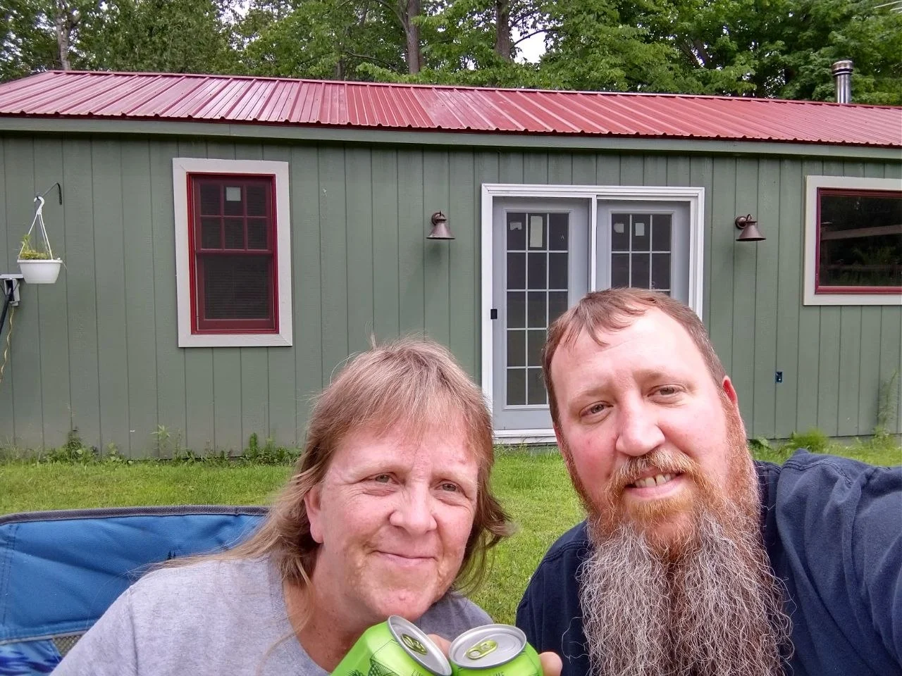
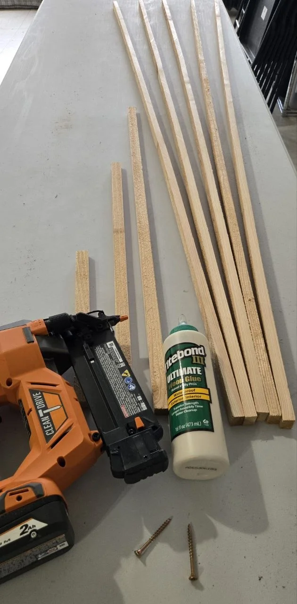
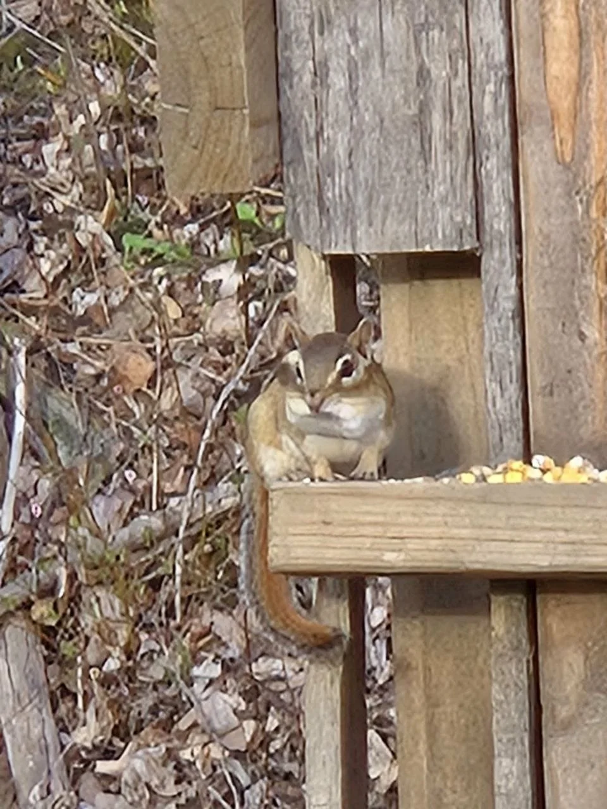
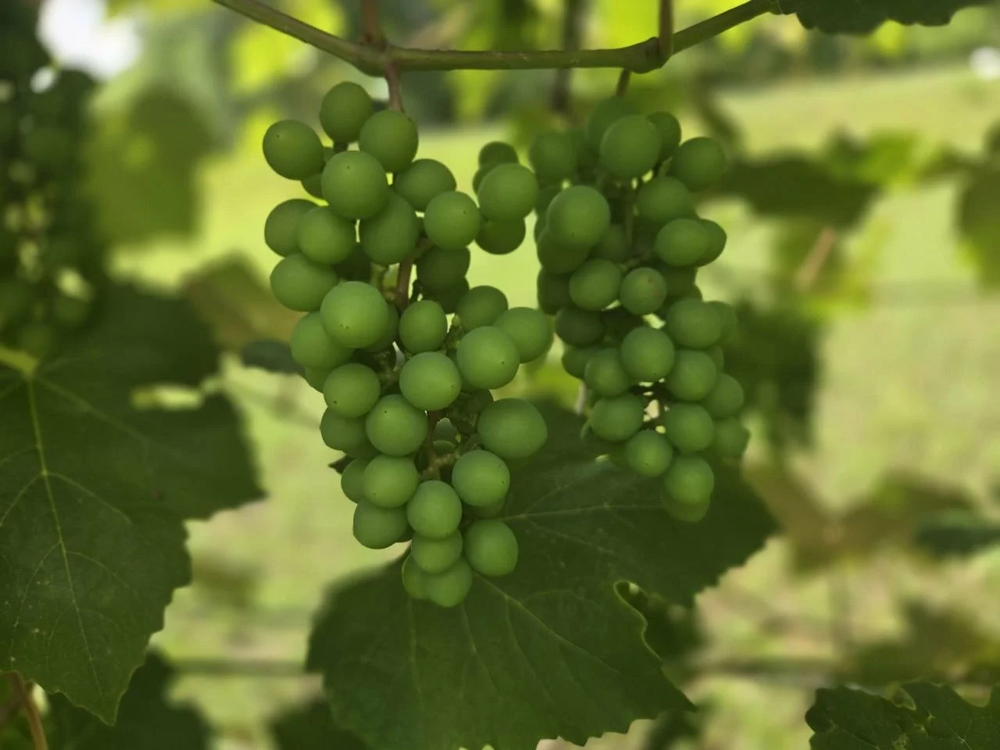
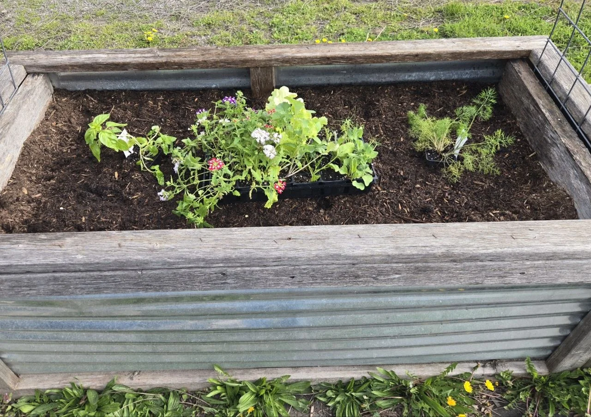
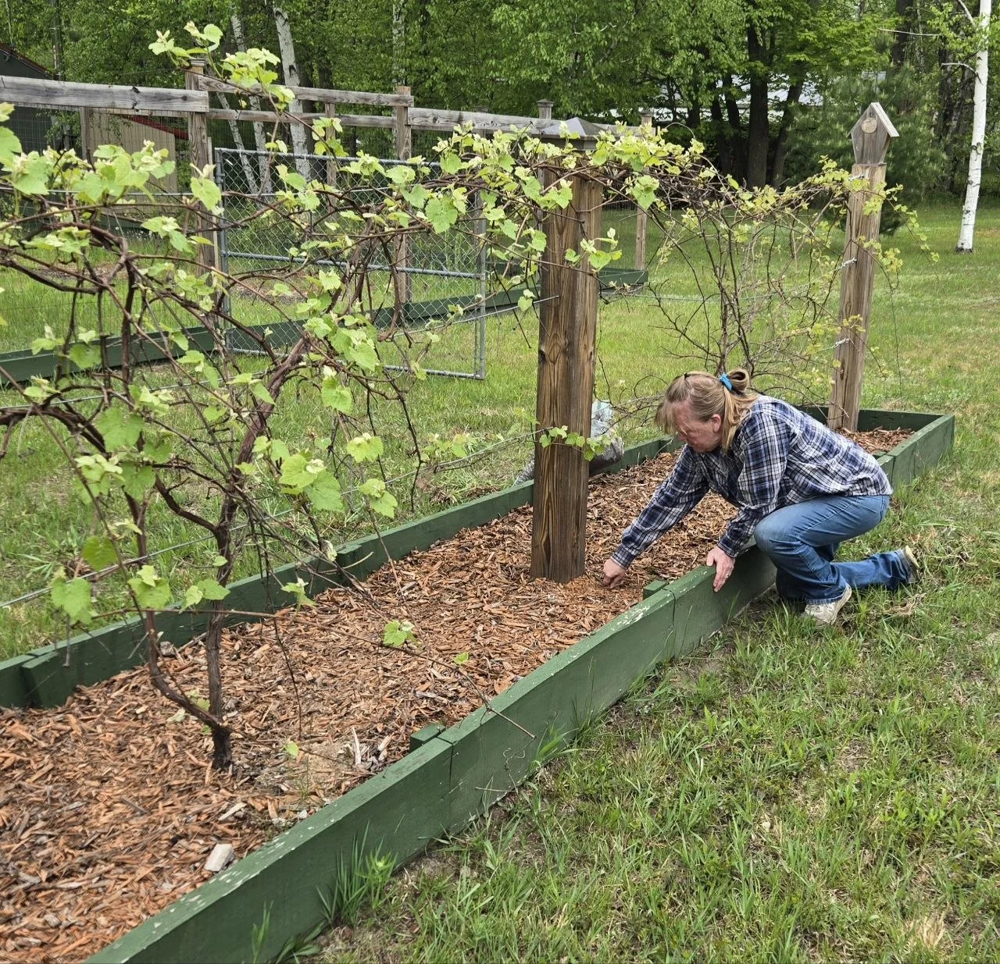

Build a little
of your own.

Jeff & VanessaThe two of us behind QBL ↗We’re building our Happy Place.
This is the practical side of that story—what we’re learning that might help you build yours.

Build something
for your Happy Place.
Garden projects. Wildlife builds. Useful little ideas.
Explore a real QBL build
Small plant.
Plenty of possibility.
Grow basil 
There’s a whole
little world out here.
Meet the neighbors Make the next
useful thing.
A few real QBL ideas for your own place.
What do you need
a hand with?
Start with something
you’d love to grow.

Food you actually eat.
Choose a vegetable
A useful little herb garden.
Explore herbs
Think a little further ahead.
Explore our fruit-tree story
Make the space count.
Plan a 4×8 bed
Good neighbors for tomatoes.
See the companion guide
Use what grows.
Find a home for extra herbs Look closer. Start with a clue.
Look closer. Start with a clue. Something eating
your garden?
Compare what you see. Find the affected crop. Take the next sensible step.
Start with the visual guideA little space.
A useful plan.
The regulars
have opinions.
One little chipmunk became part of a much longer story.
Meet Chippy & the chipmunksMake something
worth using.

Our place. Real work. Still learning.We try things.
Then we try again.
We’re Jeff and Vanessa. We’re building ours—and sharing what might help you build yours. Some days that means growing. Other days it means building, fixing, or figuring out what to try differently.
Our guides give you the useful part. The journal shows what happened when real life got involved.
Things we’re carrying forward / From the recorded journalFollow our garden storyFind the next
useful thing.
Explore the complete QBL library Photography & reference notes
Garden, wildlife and project photographs show the real QBL place and builds. Professional plant and insect reference photographs are separately credited; they are not our harvests or a diagnosis of your garden.
- Ripe tomatoes on the plant — erkan budak / Pexels source.
- Basil foliage — Alexas Fotos / Pexels source.
- Lettuce foliage — Néstor Santos / Pexels source.
- Green aphids clustered on a plant stem — Petr Ganaj / Pexels source.
- Basil plant viewed from above — jonathan emili / Pexels source.
- Harvested chives arranged on a plate — RDNE Stock project / Pexels source.
Pexels License. External photographs need internet access in this local review. The planner sketch is an example derived from the existing tool; it is not to scale or a new calculation.